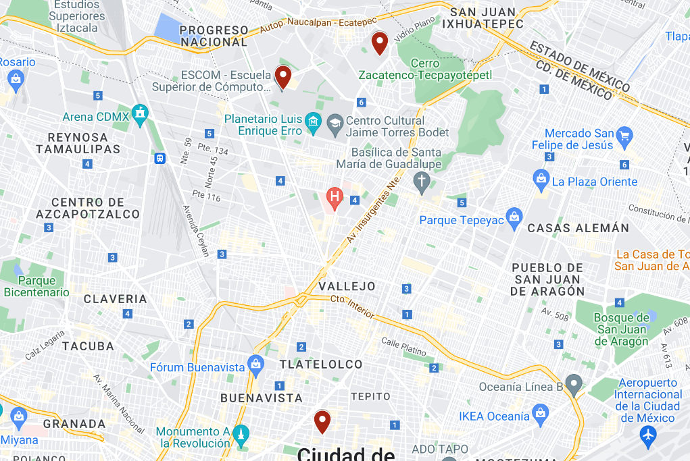

Aquí conocerás la calidad del aire de nuestras sedes principales. Descubre cómo mantenemos un ambiente saludable en cada ubicación y toma medidas informadas para tu bienestar. ¡Comienza a explorar ahora mismo!
Esta gráfica presenta la calidad del aire registrada en UPIITA durante un periodo de seis meses. Los datos muestran las concentraciones de partículas PM2.5, PM1 y PM10, las cuales se obtuvieron a través de mediciones continuas en diferentes momentos. Las fluctuaciones observadas en las mediciones reflejan variaciones en la calidad del aire y pueden tener implicaciones significativas para la salud pública y la formulación de políticas ambientales en la región.
Esta gráfica ilustra la calidad del aire registrada en ESCOM a lo largo de seis meses. Se presentan las concentraciones de partículas PM2.5, PM1 y PM10, obtenidas mediante mediciones continuas en diversos intervalos de tiempo. Las variaciones observadas en los datos reflejan la calidad del aire en esta ubicación específica y son fundamentales para comprender el impacto ambiental y sus posibles efectos en la salud pública.
Esta gráfica presenta la calidad del aire registrada en el Centro de Desarrollo Aeroespacial (CDA) durante un periodo de seis meses. Se muestran las concentraciones de partículas PM2.5, PM1 y PM10, obtenidas a partir de mediciones continuas en diferentes momentos. Las fluctuaciones en los datos reflejan la variabilidad de la calidad del aire en esta área, proporcionando información valiosa sobre las condiciones ambientales y su posible influencia en la salud de los trabajadores y la comunidad circundante.